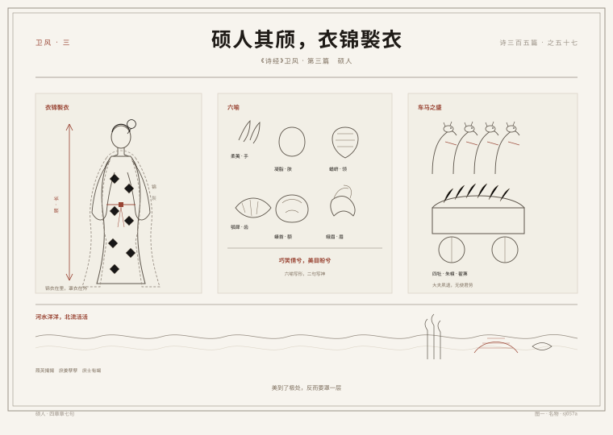
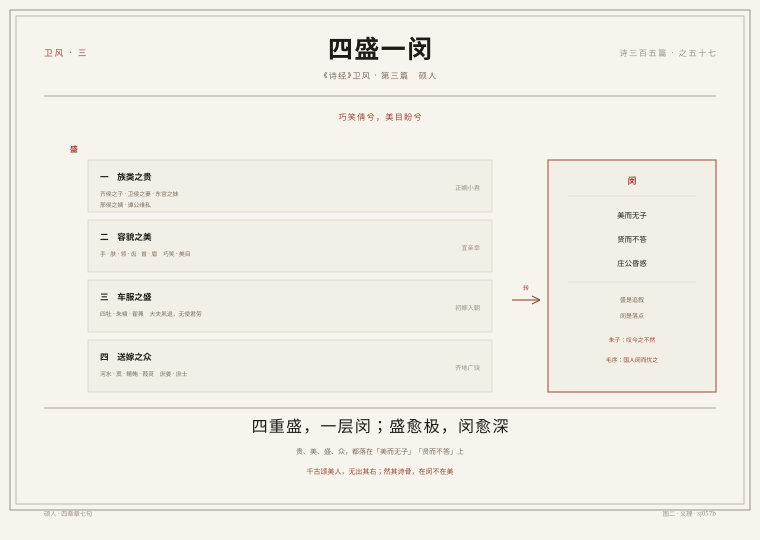

第五十七篇 硕人
卫风 · 之三 SJ057
朗读 · 普通话
依经文原文朗读，章次不读出；配古琴底乐，不改速、不加拖腔。全库同一音色（豆包 TTS），非播音员录制。
一 解题
诗三判：
- 谁在说：卫人。美庄姜，闵庄姜；不是庄姜自述。
- 说什么事：庄姜初嫁之盛——族类、容貌、车服、送嫁；四章铺到极处，落在一个「无子」「不答」的闵。
- 为何编在此：卫风第三。前篇《考槃》刺庄公不能继业、使贤者退；此篇刺庄公惑于嬖妾、不能答贤妻。由朝堂失贤，转到闺门失偶；一国一家，两失对见。
《毛序》：「《硕人》，闵庄姜也。庄公惑于嬖妾，使骄上僭，庄姜贤而不答，终以无子，国人闵而忧之。」
朱子《诗集传》：「赋也。硕人，指庄姜也。颀，长貌。……庄姜事见邶风绿衣等篇。春秋传曰：庄姜美而无子，卫人为之赋《硕人》，即谓此诗。而其首章，极称其族类之贵，以见其为正嫡小君，所宜亲厚，而重叹庄公之昏惑也。」
《左传·隐公三年》：「卫庄公娶于齐东宫得臣之妹，曰庄姜，美而无子，卫人所为赋《硕人》也。」
本库的看法：这首诗的狠，不在骂，在铺。
铺得越盛，闵得越深。贵、美、盛、众四重都写到极处，最后却是一个「贤而不答」。它不是一首单纯的赞美诗，是一首用盛礼反照冷遇的诗。
二 经文
第一章
硕人其颀，衣锦褧衣。齐侯之子，卫侯之妻。东宫之妹，邢侯之姨，谭公维私。
第二章
手如柔荑，肤如凝脂，领如蝤蛴，齿如瓠犀，螓首蛾眉。巧笑倩兮，美目盼兮。
第三章
硕人敖敖，说于农郊。四牡有骄，朱幩镳镳，翟茀以朝。大夫夙退，无使君劳。
第四章
河水洋洋，北流活活。施罛濊濊，鳣鲔发发，葭菼揭揭。庶姜孽孽，庶士有朅。
分章：四章，章七句。
三 韵读
| 一 |
颀、衣、子、妻、妹、姨、私 |
微、之、齐、队、脂（平上去通） |
| 二 |
荑、脂、蛴、犀、眉、倩、盼 |
齐、脂、霰、裥（平去通） |
| 三 |
敖、郊、骄、镳、朝、劳 |
豪、肴、宵（平） |
| 四 |
活、濊、发、揭、孽、朅 |
末、薛（入声） |
一章七句全押，平上去通为一韵；二章前五句脂、齐，后两句「倩」「盼」转去声，仍是平去通；三章豪、肴、宵一韵，声调宽扬；四章入声一韵到底，声短而收，像送嫁队伍最后收住的脚步。
「洋」不入韵，「退」不入韵，「兮」是语助，也不入韵。这几处留白，正是句读呼吸的地方。
四 字义与名物
字义
- 硕人——大人、美人；此指庄姜。郑笺：「硕，大也。言庄姜仪表长丽俊好颀颀然。」当时以高大修长为美，不是「胖」。
- 颀（qí）——长貌；身长。
- 衣锦褧衣——第一个「衣」是动词，穿；锦，文衣；褧（jiǒng），禅衣、罩衣。锦衣外面加罩衣，为其文采太著。毛传：「夫人德盛而尊，嫁则锦衣加褧襜。」郑笺：「在涂之所服也。」
- 齐侯之子——齐侯，齐庄公；子，这里指女儿。
- 卫侯之妻——卫侯，卫庄公。
- 东宫之妹——东宫，太子所居；齐太子得臣。庄姜与得臣同母，故系太子言之，见其所生之贵。
- 邢侯之姨——姨，妻之姊妹；庄姜是邢侯妻子的妹妹。
- 谭公维私——私，姊妹之夫；谭公是庄姜姊妹的丈夫。邢侯、谭公皆庄姜姊妹之夫，互言之。
- 柔荑（tí）——茅之始生；柔而白。
- 凝脂——脂寒而凝；白而润。
- 蝤蛴（qiú
qí）——木虫、天牛幼虫；白而长，以比颈。
- 瓠犀（hù
xī）——瓠中之子；方正洁白，比次整齐，以比齿。
- 螓首（qín）——螓如蝉而小，额广而方正；以比额。
- 蛾眉——蚕蛾触须细长弯曲；以比眉。
- 倩（qiàn）——口辅之美；笑时嘴角两颊生姿。
- 盼（pàn）——黑白分明；目有神。
- 敖敖（áo）——长貌；与「颀颀」同类。
- 说（shuì）——舍、止息；毛传「舍也」。郑笺读「禭」，谓至近郊更正衣服。两读并存。
- 农郊——近郊。
- 四牡——驾车的四匹雄马。
- 骄——壮貌。
- 朱幩（fén）——以朱缠镳、扇汗，并以为饰。镳是马衔外铁。
- 镳镳（biāo）——盛貌。
- 翟茀（dí
fú）——翟车；夫人以翟羽饰车。茀，车蔽；妇人车前后设蔽。
- 夙退——早退朝。
- 君——谓庄公。无使君劳，不让庄公劳于政事，好与夫人相亲。
- 河水——黄河；在齐西、卫东，北流入海。
- 洋洋——盛大貌。
- 活活（guō）——流貌、水流声。
- 施——设、张。
- 罛（gū）——大鱼网。
- 濊濊（huò）——网入水声。
- 鳣（zhān）——大鱼，似龙，黄色，锐头，口在颔下，背腹有甲；一说鳇鱼。
- 鲔（wěi）——似鳣而小，色青黑；一说鲟鱼。
- 发发（bō）——盛貌；一说鱼尾击水声。
- 葭（jiā）——芦。
- 菼（tǎn）——荻；薍。
- 揭揭（jiē）——长貌。
- 庶姜——侄娣；陪嫁的姜姓众女。
- 孽孽（niè）——盛饰；一说高大。
- 庶士——媵臣；齐大夫送女者。
- 朅（qiè）——武壮貌。
名物
- 锦与褧——锦衣、单罩衣；图一左。
- 柔荑、凝脂、蝤蛴、瓠犀、螓、蛾——六喻；图一中。
- 四牡、朱幩、翟茀——车马；图一右。
- 河水、罛、鳣鲔、葭菼、庶姜、庶士——送嫁队伍与齐地之盛；图二下。
- 「衣锦褧衣」的分寸——不是炫富，是「文之太著，故以褧掩之」；美到了极处，反而要罩一层。
五 今译
第一章
高大修长的美人，锦衣外罩单衣。她是齐侯的女儿，卫侯的妻子，东宫太子的妹妹，邢侯妻子的妹妹，谭公是她的姊妹之夫。
第二章
手像茅芽柔白，肤像凝脂白润，颈像天牛幼虫白长，齿像瓠子洁白整齐，额广如螓，眉细如蛾。巧笑时口辅生姿，美目黑白分明。
第三章
美人高大，舍于近郊。四马壮健，朱缠马衔，盛美；翟羽车蔽，入朝。大夫早退，勿使君劳。
第四章
黄河洋洋，北流活活。撒网入水，濊濊有声；鳣鲔鱼跃，发发盛多；芦荻长高。陪嫁姜女盛饰，媵臣勇武。
六 章旨
一章：族类之贵。
齐侯之子、卫侯之妻、东宫之妹、邢侯之姨、谭公维私——五重身份，不是炫耀门第，是为「正嫡小君」定位：她本该被亲厚。
二章：容貌之美。
六喻写形，两句写神。「巧笑倩兮，美目盼兮」是全诗眼；但美不等于被爱，这一章越美，下一章的「不答」越冷。
三章：车服之盛。
初嫁入朝，四牡、朱幩、翟茀；大夫夙退，无使君劳。这是国人的期待：让庄公与夫人相亲。朱子读「而叹今之不然」——盛是追叙，不是眼前。
四章：送嫁之众。
河水、网、鱼、苇、庶姜、庶士；齐地广饶，礼仪盛备。以天地万物之盛，衬一人之孤独。
四章合看：四重盛，一层闵。
贵、美、盛、众，都落在「美而无子」「贤而不答」上。盛愈极，闵愈深。
七 诗教
- 兴：此诗是赋，不是兴；但它兴起一种「盛极而冷」的感觉：越是把婚礼写得圆满，越让人想到她后来的独处。
- 观：观庄姜之贵、之美、之贤；也观庄公之昏惑——不是没有贤妻，是不能答。
- 群：可与「被冷落者」同群；也可与「只看外表者」同群，后者读之当愧：美不是被爱的保证。
- 怨：怨在「贤而不答」。诗不直骂庄公，只把盛礼铺开；刺在言外，所以更冷。
八 分寸与边界
- 不可把「硕人」当「胖人」。硕是大，颀是长；当时以高大修长为美。读成肥胖，全诗的气象就塌了。
- 不可把第二章只当「美女图」。它是「宜亲幸」的论证：这样一个人，本该被爱；美是理由，不答是罪。
- 不可把「大夫夙退」当婚礼热闹。它是国人的期待与讽今：愿大夫早退，使君与夫人相亲；而朱子说「叹今之不然」。
- 不可把「闵」当纯同情。闵中有刺；盛与衰对见。只读成哀怜，就看不见毛序的「刺庄公」。
- 不可把庄姜只当「受害者」。她贤、有守；诗没有写她的内心，只写国人看她。她的沉默，正是这首诗的分寸。
九 存疑
- 诗旨：毛序主「闵庄姜」；朱子主「美而叹庄公之昏惑」；现代也有读作单纯赞美者。本库从毛序与《左传》，以闵为主，以刺为骨。
- 作者：卫人，具体人无考。相传《邶风》五篇为庄姜自作，与此诗第三人称口吻不同，不能混为一谈。
- 「说于农郊」：毛传「舍也」，朱子从之；郑笺读「禭」，谓更正衣服于近郊。两读并存，不必强合。
- 「君」指谁：郑笺、朱子皆谓庄公；毛传「君听朝于路寝」亦指国君。一说泛称，不必改。
- 「谭公维私」：私为姊妹之夫；谭公是庄姜姊妹之夫。谭的爵称、地望有异说，不必指实。
- 「庄姜无子」：就亲生而言；后以戴妫之子完为己子。州吁之乱在庄公身后，诗不必作于其时。
- 作诗时点：朱子「叹今之不然」暗示追叙；诗或作于庄姜见弃之后，不必是初嫁当时。无确证。
十 跨典
- 《左传·隐公三年》：「卫庄公娶于齐东宫得臣之妹，曰庄姜，美而无子，卫人所为赋《硕人》也。」这是此诗最早的史证。
- 《论语·八佾》：子夏问「巧笑倩兮，美目盼兮，素以为绚兮」，孔子答「绘事后素」。今诗无「素以为绚兮」一句，但可见此诗在先秦已被诵读、引申。
- 《中庸》：「衣锦尚絅，恶其文之太著。」与「衣锦褧衣」互证：锦衣加罩，不是藏美，是不让文采压过人。
- 《卫风·淇奥》《考槃》：武公之美、庄公之刺、庄姜之闵，卫风前三篇正好是一部小盛衰史。
- 《洛神赋》《长恨歌》：后世写美人，多从此诗取形取神；「回眸一笑百媚生」一类的句子，都能听见「巧笑倩兮，美目盼兮」的回声。
十一 双卡与图
双卡五对：
| 硕人（高大美人／庄姜） |
硕人（胖人，误） |
| 衣锦褧衣（锦衣加罩衣） |
衣锦褧衣（锦衣夜行，误） |
| 东宫之妹（太子同母妹） |
东宫之妹（东宫侍女，误） |
| 邢侯之姨（邢侯妻妹） |
姨（姨妈，误） |
| 朱幩镳镳（红绸马衔盛美） |
朱幩（红色头巾，误） |

图一 · 衣锦褧衣、六喻、车马 名物图

图二 · 贵、美、盛、众，四盛一闵 义理图
读图三处：
- 衣锦褧衣：图一左，锦衣在里，罩衣在外；美被罩住，不是被抹去。
- 六喻：图一中，柔荑、凝脂、蝤蛴、瓠犀、螓、蛾，六物都比在人身；到「巧笑」「美目」，才由形入神。
- 四盛一闵：图二四层「贵、美、盛、众」，最后收在「美而无子，贤而不答」；盛是手段，闵是落点。